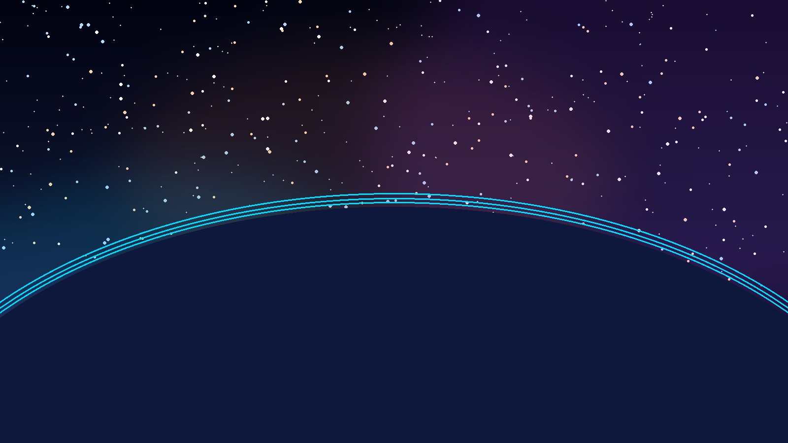
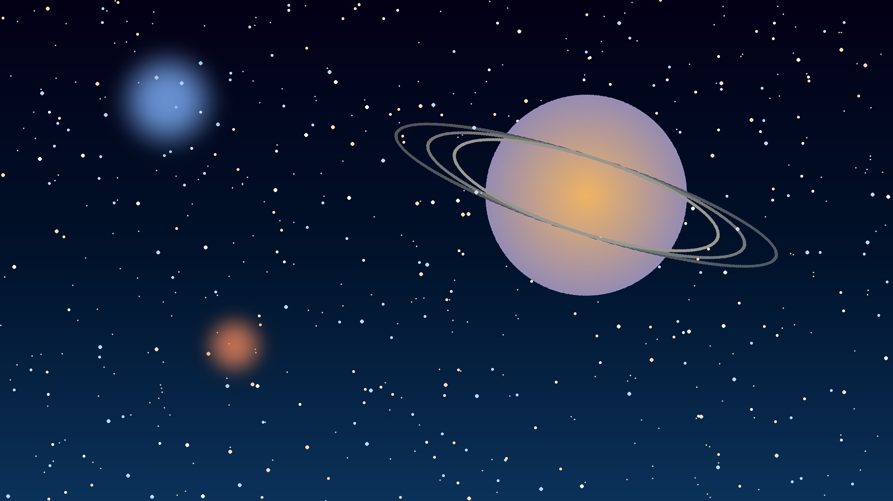
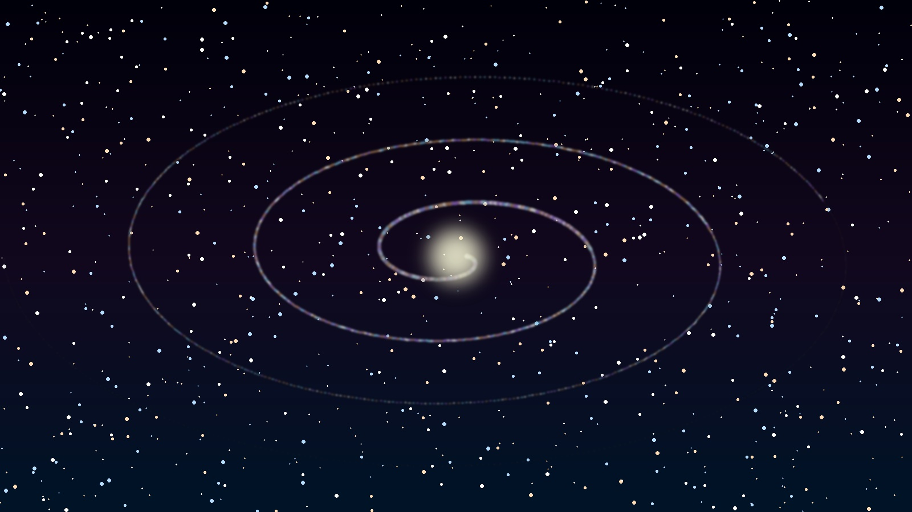
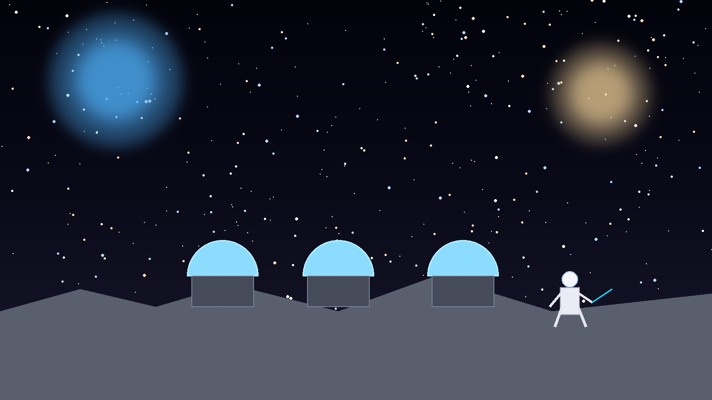
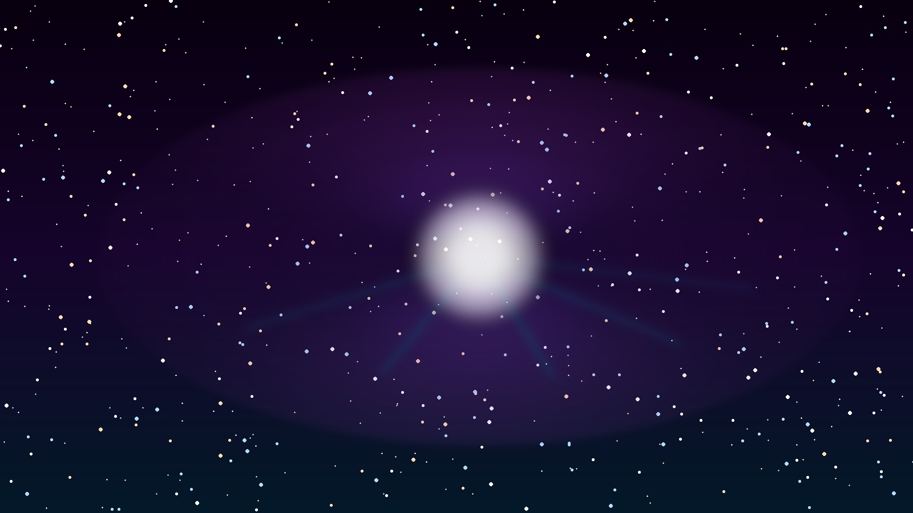

As Imagens mais Incríveis do Universo
A fotografia espacial transformou nossa relação com o cosmos. O que antes era apenas imaginação ganhou forma visual através de instrumentos sofisticados como telescópios orbitais, sondas interplanetárias e câmeras de alta resolução instaladas em satélites. Cada imagem conta uma história de bilhões de anos, registrando fenômenos que ocorrem em escalas de tempo e espaço incompreensíveis para a mente humana. Desde a delicada estrutura de uma nebulosa em colapso até a majestosa espiral de uma galáxia distante, essas fotografias são, ao mesmo tempo, documentos científicos e obras de arte cósmicas que nos convidam a refletir sobre nosso lugar no universo.

Nebulosa — Espaço Profundo
Galáxia Espiral
Terra Vista do Espaço
Superfície Lunar
Marte — Planeta VermelhoAs cinco imagens acima representam destinos e fenômenos que definem o imaginário da exploração espacial contemporânea. A nebulosa, no canto superior esquerdo, é um berçário estelar — nuvens de gás e poeira onde novas estrelas nascem ao longo de milhões de anos. A galáxia espiral nos lembra que a Via Láctea é apenas uma entre incontáveis estruturas similares no universo observável. A Terra vista do espaço, popularizada pela famosa fotografia "Pale Blue Dot" de Carl Sagan, é um lembrete da fragilidade e unicidade do nosso planeta. A Lua e Marte representam os dois principais destinos das próximas décadas de exploração humana além da Terra.
Vídeo e Áudio
🎬 Vídeo: Viagem pelo Sistema Solar
Assista a uma simulação visual da imensidão do nosso Sistema Solar, com uma perspectiva que raramente conseguimos imaginar olhando para o céu noturno.
🎙️ Áudio: Sons do Universo
A NASA converte dados de ondas de plasma e campos magnéticos captados por suas sondas em áudio — resultando em "sons do espaço" fascinantes. Buracos negros, anéis de Saturno e até a atmosfera de Júpiter já foram "traduzidos" em ondas sonoras para que possamos ouvir o cosmos de uma forma completamente nova e surpreendente.